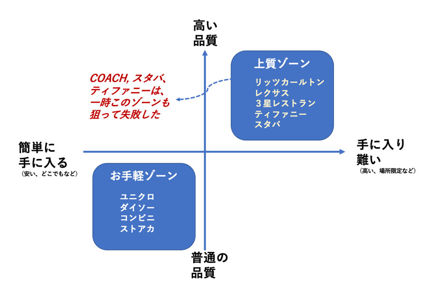

世の中で目立つ商品やサービスには、それぞれ特徴があります。安さだったり、便利さだったり、高級感だったり、さまざまです。本書は、それらが競争戦略上どのように生き延びたか（あるいは消滅したか）を、シンプルですが面白い視点から解説した本です。「そういえばあの商品・あのサービス、あったなぁ！」となつかしく感じながら、その盛衰の原因がなんであったかをクリアに感じることができるでしょう。そして、私たちの今後の事業展開の参考にもなると思います。
本書の主張は、一言で言えば「中途半端はいけません」ということです。では何がいいかといえば、自社の商品・サービスが「上質を狙う」ものなのか、「お手軽を狙う」ものかを明確にしましょうということです。それを認識して、市場競争から抜け出すためにどうすればいいかを検討する。間違っても二頭（上質もお手軽）も狙ってはいけない・・・というものです。
皆さんはきっとスターバックスをご利用になったことがあるでしょう。独特の雰囲気があり、従来のコーヒー店とは一線を隠す雰囲気を気に入っている人も多いはず。しかし、この頃はどこに行ってもあります。そもそも、スターバックスは「上質な店」を狙ってグレード高い雰囲気が利用者の満足感を満たしていました。

ある時、株主の意向もあって拡大戦略にいったことから、ここにしかないスタバが、どこにでもある（普通の）スタバになってしまって価値が損なわれそうな時期があったそうです（その後、方向転換があったようですが）。そこにしかない上質が、どこにもあるお手軽スタバになると、大切にしていた価値が損なわれることになったのです。同じような失敗は、コーチ（カバンなどの）やティファニーでもあったようです。
この本の要諦をマトリクスにすると図のような感じになるでしょうか。スタバ、コーチ、ティファニーは、右上の「上質ゾーン」をはみ出して「お手軽ゾーン」にも市場を拡大しようとしてしまい、大事な価値（上質）を損なってしまったということですね。
私たちが提供している、これから検討しようとしている商品やサービスがどこを狙っているか（顧客、値段、流通、競合などを加味して）検討するときの、ひとつのメガネとして、上質狙いか、お手軽狙いかという視点も役にたつのではないでしょうか。ネット販売にも出そうとするとき、あるいは量販店やスーパーにも商品を卸そうとするとき、ちょっと自社の商品やサービスの意義を考えてみるのもよいかもしれません。中途半端な方向にいってしまわないか、要注意ですね。